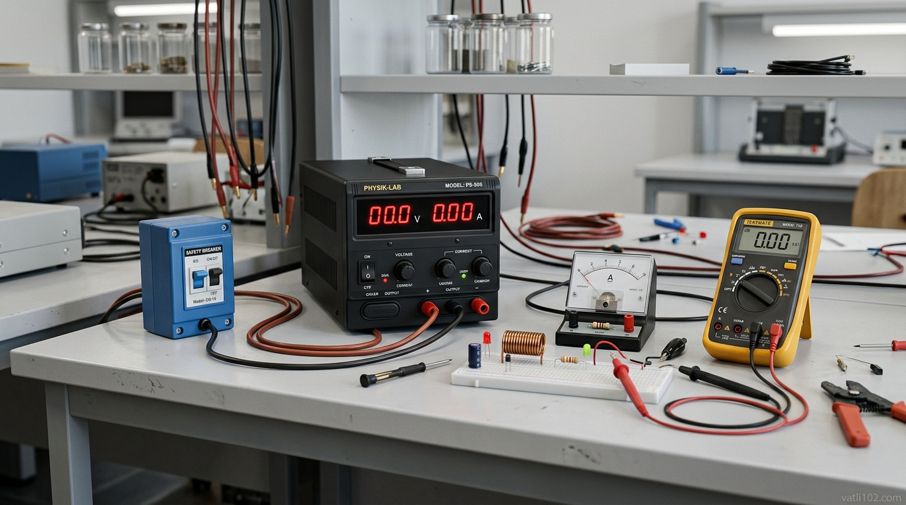

Bài 2: Các Quy Tắc An Toàn Trong Phòng Thực Hành Vật Lí
Phòng thực hành Vật lí là không gian tuyệt vời để các em trải nghiệm và khám phá thế giới tự nhiên. Tuy nhiên, nếu thiếu kiến thức an toàn, các sự cố về điện, hóa chất hay áp suất có thể gây ra nguy hiểm nghiêm trọng. Hãy cùng tìm hiểu bộ quy tắc an toàn chuẩn mực giúp bạn khám phá khoa học một cách tự tin và an toàn nhất!
Mô phỏng 3D: Trang thiết bị bảo hộ & dụng cụ thí nghiệm Vật lí chuẩn
NỘI DUNG BÀI HỌC THỦ KHOA
1 Các Nguy Cơ Mất An Toàn Thường Gặp Trong Phòng Thực Hành
Khi thực hiện các bài thực hành Vật lí (đặc biệt thuộc các chủ đề Điện học, Quang học, Nhiệt học và Áp suất chất khí), học sinh có thể gặp phải một số nguy cơ nguy hiểm nếu thao tác sai quy trình:
Xảy ra khi cắm trực tiếp thiết bị hạ áp vào nguồn $220\text{V}$, chạm tay ướt vào công tắc điện hoặc sử dụng dây dẫn bị tróc vỏ cách điện làm hở lõi đồng.
Khi sử dụng các bình chứa khí nén áp suất cao hoặc gia nhiệt ống nghiệm thủy tinh đậy kín gây nổ giải phóng mảnh vỡ với động năng lớn nguy hiểm.
Hóa chất thực hành văng bắn vào mắt/da, hoặc vô tình làm rơi vỡ nhiệt kế thủy ngân làm thủy ngân bốc hơi độc hại vào không khí.
Chiếu thẳng chùm tia Laser cường độ cao vào mắt gây tổn thương võng mạc, hoặc chạm tay vào điện trở/bình đun đang nóng gây bỏng nhiệt.

Mô phỏng 3D: Quy trình kiểm tra máy biến áp nguồn đưa về 0V trước khi cắm điện
2 Quy Tắc An Toàn Khi Sử Dụng Thiết Bị Thí Nghiệm Điện
Thí nghiệm điện là nội dung quan trọng và xuất hiện thường xuyên nhất. Học sinh bắt buộc phải ghi nhớ nguyên tắc "3 BƯỚC AN TOÀN ĐIỆN" sau đây:
QUY TẮC VÀNG THAO TÁC MẠCH ĐIỆN THỰC HÀNH:
- Đưa về 0V: Trước khi cắm phích điện vào nguồn lưới, bắt buộc phải xoay núm điều chỉnh điện áp của máy biến áp nguồn về mức $0\text{V}$.
- Ngắt nguồn trước khi sửa: Mọi thao tác thay đổi dây nối, tháo lắp linh kiện hoặc cắm lại bảng mạch chỉ được thực hiện khi công tắc nguồn điện đã ngắt hoàn toàn.
- Không giật dây điện: Khi rút phích cắm, một tay giữ chặt ổ cắm trên bàn, tay kia cầm chắc phần chuôi cách điện của phích cắm rút thẳng ra (tuyệt đối không giật dây).
Mô phỏng 3D: Các biển báo Cấm, Biển Cảnh Báo Nguy Hiểm & Biển Chỉ Dẫn Thoát Hiểm
3 Nhận Biết Các Ký Hiệu Cảnh Báo An Toàn & Biển Báo Phòng Thực Hành
Trong phòng thực hành Vật lí, các biển báo an toàn được phân loại rõ ràng bằng hình dạng hình học và màu sắc quy chuẩn quốc tế:
BIỂN BÁO CẤM
Hình tròn viền đỏ, nền trắng, hình vẽ màu đen kèm gạch chéo đỏ $\rightarrow$ Biểu thị thông điệp cấm thực hiện (VD: Cấm mang đồ ăn thức uống, cấm lửa).
BIỂN CẢNH BÁO NGUY HIỂM
Hình tam giác đều viền đen, nền vàng, hình vẽ màu đen $\rightarrow$ Cảnh báo nguy cơ nguy hiểm (VD: Điện giật cao áp, tia Laser, bề mặt nóng).
BIỂN BÁO HIỆU LỆNH
Hình tròn nền xanh dương, hình vẽ màu trắng $\rightarrow$ Yêu cầu bắt buộc phải thực hiện (VD: Đeo kính bảo hộ, đeo găng tay cách điện).
BIỂN BÁO CHỈ DẪN
Hình chữ nhật/vuông nền xanh lá cây, hình vẽ màu trắng $\rightarrow$ Chỉ dẫn thông tin thoát hiểm (VD: Lối thoát hiểm EXIT, vị trí trạm rửa mắt cấp cứu).
4 Quy Trình 4 Bước Xử Lý Sự Cố Khẩn Cấp Tại Phòng Thí Nghiệm
Chập cháy thiết bị điện:
Ngắt ngay aptomat điện tổng của phòng. Tuyệt đối KHÔNG DÙNG NƯỚC để dập cháy điện đang nối nguồn (vì nước dẫn điện gây giật). Sử dụng bình chữa cháy $CO_2$ hoặc cát khô.
Hóa chất bắn vào mắt/da:
Đưa ngay nạn nhân đến trạm rửa mắt cấp cứu, rửa mắt dưới vòi nước sạch liên tục trong tối thiểu 15 phút để làm loãng hóa chất, sau đó báo y tế.
Bỏng nhiệt nhẹ:
Ngâm ngay vết bỏng vào nước sạch mát trong khoảng 15–20 phút để giảm nhiệt độ tổn thương sâu và xoa dịu vùng da bỏng.
Xử lý rơi vỡ thủy ngân:
Sơ tán học sinh, mở cửa thông thoáng. Đeo khẩu trang, rắc bột lưu huỳnh ($S$) phủ lên các hạt thủy ngân để tạo hợp chất $HgS$ dạng rắn không độc trước khi thu gom.
Sẵn Sàng Làm Bài Trắc Nghiệm Tự Luyện?
Hệ thống 10 câu trắc nghiệm nhiều lựa chọn, 2 câu Đúng/Sai & 2 câu trả lời ngắn thực tế đang chờ bạn thử sức với phản hồi lời giải ngay lập tức!